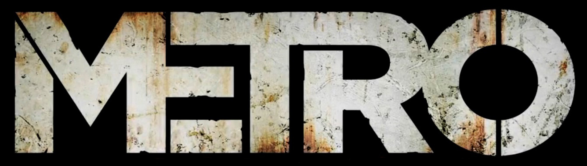
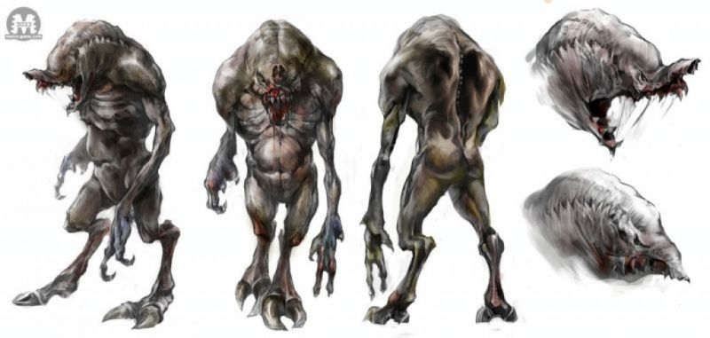
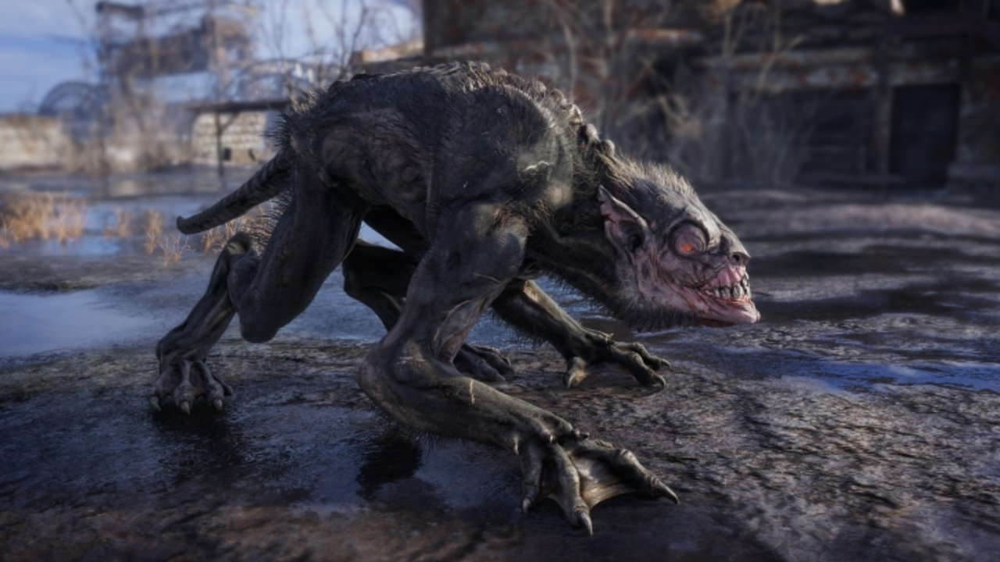
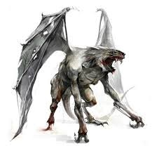
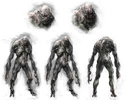
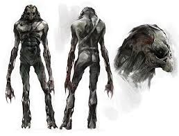

ACCUEIL
HISTOIRE
FACTIONS
MUTANTS
Le NOSALIS
Les HURLEURS
Le DEMON
le BIBLIOTHECAIRE
Le SOMBRE

Image d'un Nosalis

Image d'un Hurleur

Image d'un Démon

Image d'un bibliothécaire

Image d'un sombre